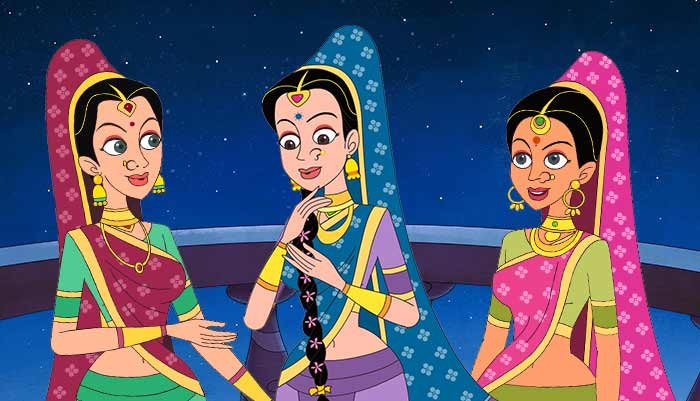

|
Three Princes
Whoever is mighty, only he is the master
Vaitaal again started speaking - "Listen now, I tell you a story just to pass
time, listen to it." Vaitaal started his story and Vikram listened.
Vaitaal said - "The princess of Magadh Desh, Chandralekaa was very
beautiful. As she grew up, many princes proposed to marry her, but she
refused to marry anyone. Then one day her mother asked - "Do you want to
marry or no?" "Yes, I will marry, but only when I will get an appropriate boy."
Mother again asked her - "So there is no boy appropriate for you among
them?" "No." "Then who will be the appropriate boy for you?" "Who is mighty
and can protect his wife." Mother said - "OK, Then only you decide to whom
you want to marry." The princess agreed.
After some time a prince's proposal came, the princess asked - "What is your
quality?" The prince said - "I can see past, present and future." The princess
didn't reply him anything. After that another proposal came. The princess
asked him the same question, he said - "I have a chariot which can run
anywhere - on water, in air, on road, and I have built it myself." After that
another proposal came and the princess asked him the same question. He said
- "I have a sword whose hit never misses, and nobody can save himself from
it."
Some other proposals also came, but the princess was unable to decide. Her
mother was very worried with this. She told her that she would tell her her
decision next day.
By chance those three princes, who told her their qualities, came next day.
The first prince's name was Veerendra, the second one's name was Udayaveer
and the third one's name was Dhananjaya. The princess asked them to wait.
In the meantime the princess got disappeared. Everybody got worried about
the princess.
As all the princes were present there, Veerendra was asked to tell where she
was. He did some calculations and told that a Raakshas had fallen in love with
her beauty, has taken her and kept her in his palace in Araavatee hills. He
told the way to reach up to the palace and drew the map also of that palace.
33
At this Udayaveer said - "I can take you right into his palace by my chariot."
Dhananjaya said - "Nobody can save him from my sword." Now Veerendra and
Dhananjaya sat on Udayaveer's chariot and it soon came to the place of the
Raakshas. Veerendra said - "The princess is in her room and crying, and the
Raakshas will be killed by Dhananjaya."
All the three attacked on the Raakshas. Dhananjaya killed him with only one
hit of his sword. As he was killed, his Maayaa palace also vanished, and the
three brought the princess back. Now all started claiming the princess.
Veerendra claimed that if he had not drawn the map, both could not find the
princess. Udayaveer claimed that if he did not have that chariot, those two
could not have reached there in this life. And Dhananjaya claimed that if he
had not killed the Raakshas, the address and the chariot couldn't do anything,
that is why the princess was his.
All were right in their own ways. But when the princess was asked, she told
that she was obliged to all of them. They should decide among themselves.
Now tell, whose right is on the princess?"
Vikram thought for some time and said - "The princess is of Dhananjaya's.
Because whoever is mighty, only he has the right. The Raakshas was killed by
Dhananjaya. Only he is the true husband who protects his wife."
"You are right." Saying this Vaitaal again laughed heartily and ran away from
the king's shoulder and hung upside down from the same tree. The king
Vikramaaditya again got very angry at this. He took out his sword, followed
him, took him from the tree, put him on his shoulder and started walking.
Vaitaal again started speaking - "O King, You are very courageous. And you
are indeed a just king." He was speaking and Vikram was listening.
|

|